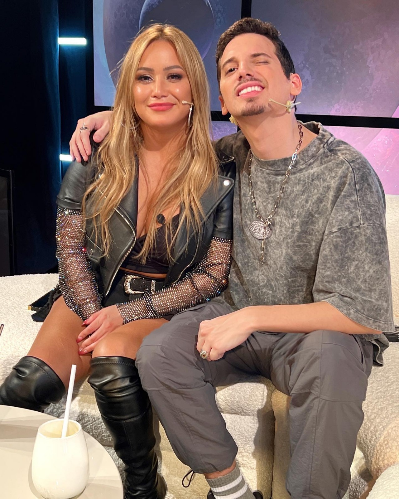
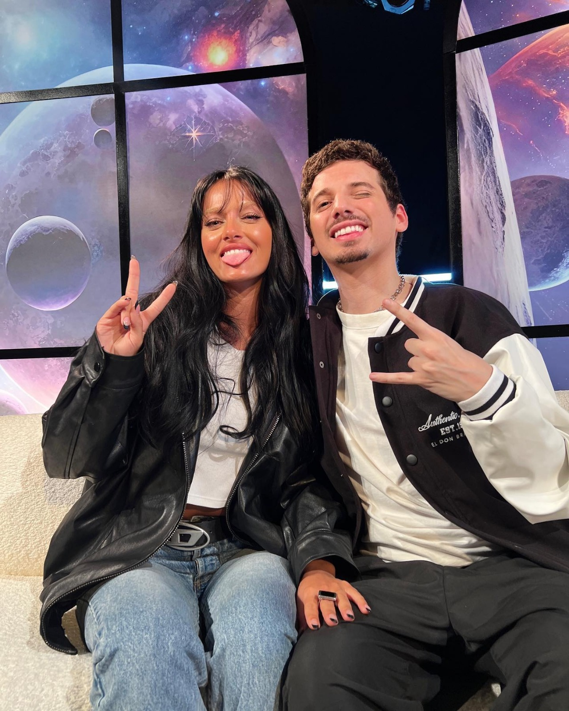
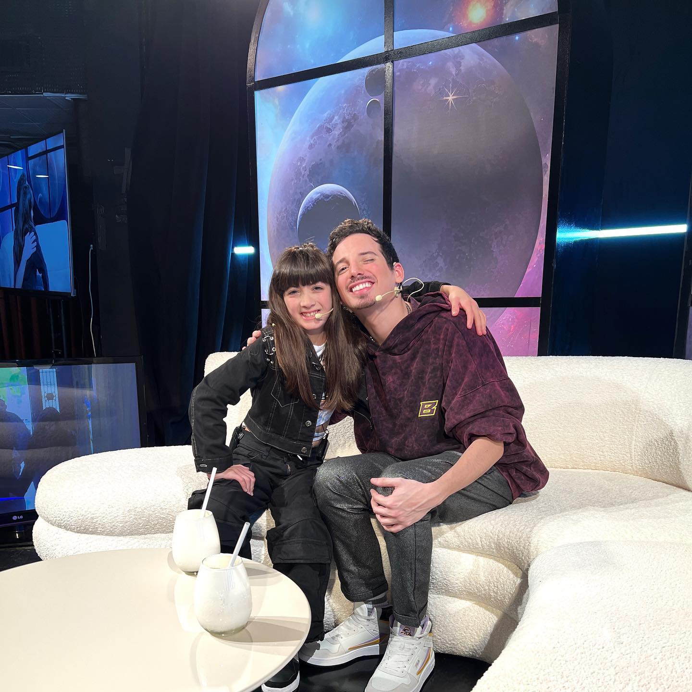
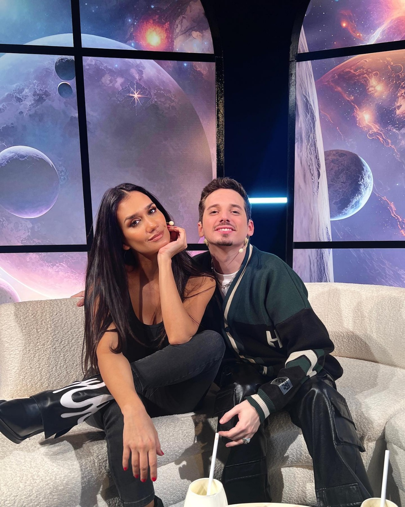

Actualmente, Pablo Agustín sigue trabajando en las redes sociales. Participa en la revista "CARAS", y patrocina marcas y fotografos por redes como Instagram.
Pero lo más interesante, es que también trabaja en la radio Luzu TV "Más de lo Mismo", los lunes, miércoles y viernes de 15 a 17hs. Trabaja junto a Leuco,
Ochiatto, Flor Peña, entre otros. Gracias a este programa en su Instagram (@pabloagustinnn) tiene fotos con muchos famosos, como Oriana Sabatini, Karina "La Princesita", Flor Vigna, entre muchos más.




Además entrevista en vivo a muchos famosos en "Plateanet" llamado "Pablo Agustin EN VIVO" y se resuben en Youtube en su canal "PabloAgustin". Pablo le va preguntando sobre
sus polemicas, cruces entre otros famosos, preguntas más frecuentes del público, etc, y el invitado responde mientras debaten.
Su entrevista más vista es con "More con Flow" con 532mil vistas.
Por otro lado, en su canal de youtube también sube videos de ciertos temas polémicos que los resume y los explica el mismo. Como por ejemplo, "Bailando 2023", "Milei con Fátima Florez",
"Reimos para no llorar", "Nicki Nicole y Peso Pluma", entre muchos más.
Cons respecto a Barbara Martinez, ella siguió en Youtube sacando canciones de estilo Heavy Metal, como por ejemplo "HERE TO REMIND YOU", "AJEDREZ", "ALIVE" y cover como "ZOMBIE", "DON'T SPEAK", "NUMB", entre otros.
Su último cover fue "TORN" el 27 de oct de 2020, y su última publicación de Instagram el 30 de oct de 2020. No se supo más de ella, ni que ha hecho hasta ahora, solo se sabe que no trabaja más en redes sociales.